|
Ismailia and Cairo
Dear All,
I know – we’re well
behind with this – sorry – but we’ve not been spending heaps
of time in marinas with shore power and running the laptop
on board, well, it chews the batteries.
So I’m now sitting in
the Iskele Restaurant in Orhanie, Turkey – wifi and power.
Let’s see how much I can get written today. Sorry, but
there aren't many pics for the first bit.
Ismailia and
getting ready to go to Cairo
The last email left us
in Ismailia, battling the usual corrupt Egyptian police to
get fuel. We wanted 400 lts (at US$0.10/litre who
wouldn’t?), and even after all the bribes we had to pay, it
still worked out at just US$0.20/ltr. The first day we
managed 200lts, the second we snuck our cans out with
someone else for another 100lts so split the bribe.
The next day we
planned to head off to Cairo so flagged down a cab to get
the few miles out of town to the bus station to sort out our
tickets. It was dead easy – just rock up, buy the tickets
and the buses left every half an hour. And even with a tip,
the taxi fare was just 5EP.
That afternoon, Jean
called up the hotel that had been recommended to us by other
yachties only to find it was full – but no worries, they
gave us the telephone number of the hotel on the floor below
so Jean booked us in there.
Our wonderful guide
from the Nile trip, John, had recommended a guide for Cairo
and Jean had already booked them from Port Suez. All we
needed to do was just confirm our dates.
Since we were only
going to be away for two days, packing was rattled off
pretty quickly leaving us time to wander around the town for
the evening before a quick beer in the George. We ended up
there a little longer than planned when we bumped into an
excellent South African gentleman who was a couple of months
into a year’s contract to set up a irrigated farm over in
the Sinai – and he wasn’t too sure if had been a good
choice. As he outlined all the challenges he faced –
especially from officialdom - we tended to agree with him.
Even so, it wasn’t a
late night since we planned to catch the first bus to Cairo
at 06.30 – and that meant leaving soon after 5.00. Another
couple of yachties were going to keep an eye on Hinewai for
us but even so we still left her all safely locked up and
the sea cocks all closed. In good time, we climbed over the
bow and walked up to the security gate – and then the fun
started.
A moustache that
would have suited Adolf and Saddam
To get out of the
marina area, you had to pass through the Port Police
checkpoint. It’s a road block of one of those red and white
poles that’s balanced to lift up, manned by three young
policemen, toting the ubiquitous well worn AK-47 and wearing
the worst uniform we have seen on our travels.
It consists of baggy
looking white trousers and shirt – not the designed baggy
camo greens as you see our soldiers wearing, just badly
fitting. Big heavy black boots, some resemblance of polish,
a tatty wide black belt, no pouches. But crowning this
sartorial elegance is the beret. It’s one of those really
big ones and worn with no panache, pulled down one side –
no, these are worn as if they’d been dropped from a high
window and just happen to pancake land on the guy’s head.
They are a sorry looking bunch – even the officers who just
tend to smell a little less. But we tend to treat any
spotty kid with an AK-47 with a certain caution.
Back to road block –
we’d passed through it several times and all you normally
did was just flash the front page of your passport going
out, the visa page coming back. Sometimes they’d take your
passports to compare faces with the picture, but rarely.
But this morning was different – this kid took our
passports, we were denied exit and taken into a small office
with a desk, a couple of wooden chairs in front and an
officer lounging on his padded chair behind. This guy was a
shit – maybe mid 30’s, thinnish build, longish black hair
and a moustache he seemed to have grown to be half way
between Adolf Hitler’s and Saddam Hussein - he was the bribe
king and was loathed by all the yachties.
Worst still, an older
fatter man, wearing civvies, slimed his way in behind us.
We never worked out quite who he was – he always seemed to
be around, often just sitting is his car with the air-con
running – but whenever there was a chance that a bribe could
be extracted, he was always there.
The kid with the gun
passed Adolf Hussein our passports and left. Then the party
games started as he asked, “Where you going?”
“Cairo”
“How you go?”
“By bus”
“How get to bus”
“Taxi”
“How much you pay
taxi?”
“5 pounds”
“No, no – taxi more.
You use my taxi”
"Erm thank you but
no. We’ll just walk up and wave a taxi down”
“No, more than 5
Pounds – use my taxi”
This was the start of
a 5 minute cyclic discussion where it was clear he wanted
money to let us go – and we had had enough and he could go
hang. But the bugger still had our passports. Then the
civilian sleaze started – same sort of questions, but being
translated through the officer. They were trying to make it
clear we weren’t going to be able to go unless we used
“their taxi”. It did have its lighter moments though – at
one point the uniformed sleaze grabbed a pad and a pen,
plonked them down in front of Peter and demanded “Write
Taxi”.
Peter obliged “Taxi”.
Getting away to
Cairo
Then the civilian
sleaze made his big mistake – he put our passports down on
the desk – no black mamba has ever struck as fast as Peter
did.
With Passports in
hand, we moved into feigned “we do not understand” mode –
standing up, thanking them for their concern and walking
out. The 20 yards or so to the road block were a little
nerve racking with the civilian sleaze shouting something at
us, but we slipped round the end of the red and white pole
and walked off down the street. We were to have another run
in later with the uniformed sleaze, but for now – we were
out of there, flagging a taxi down at the end of the street.
Twenty minutes later,
we boarded the bus, tickets in hand. We guessed that
the numbers hand written on the back might be seat numbers,
but there were clearly a great couple of seats by the back exit –
heaps of leg room – so we grabbed them. A couple of younger
guys did look at us, look at their tickets but, as we smiled
innocently at them, decided to sit somewhere else.
The trip was similar
to the one we took from Hurghada – at first, we travelled
through desert – not rolling sand dunes, but dusty rocky
terrain – before gradually seeing more irrigated arable land
the closer we got to the Nile. Slowly the odd huts
alongside the road turned into dusty hamlets, then villages,
town and finally continuous buildings. We were coming into
Cairo.
Cairo – Day 1 –
Bazaars and Light Shows
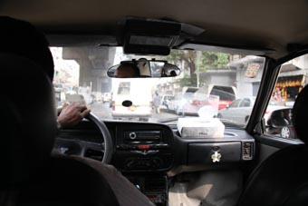
The bus trip ended at
Cairo Gateway Bus Station, a vast bus station that resembles
an airport – and like an airport, a long line of taxis.
But we couldn’t see them at first - not from where our bus
terminated – we had to wander about till we found a can
dropping someone off. We leapt aboard, had a quick haggle
over the fare and five minutes later drove past the taxi
rank – why it was so far away we never worked out.
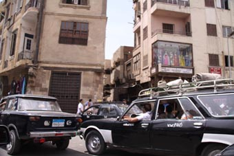
This trip was Jean’s
first exposure to one of the world’s biggest cities – and
she spent the entire trip snapping shots out of the taxi’s
windows.
Cairo is vast, a sea of tenement style buildings –
some once made of white stone, some of red brick, some a
mixture of brick and concrete – but over the years,
everything has dirtied down to a shades of a grey/brown hue
with just hints of the original colours beneath.
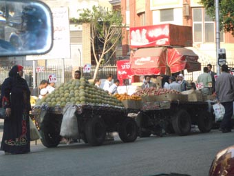
Down
the side roads are little markets, the stalls jostling for
the same
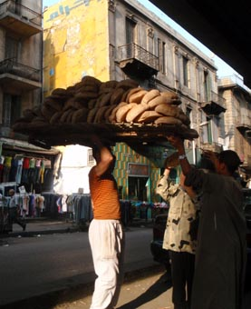 space as the cars that try to squeeze around them -
and where there's no room for a stall, that's easy - just
park a trailer or two in a main road. Or do home
deliveries of bread.
And the traffic – as
maniac as can be – packed roads with cars, vans, trucks and
buses elbowing for space and cutting each other up as crowds
of pedestrians take their lives in their hands dodging
around these lumps of steel that are likely to dart forward
at any moment with no warning to gain a couple of feet on
the vehicle beside them.
The air is rent by the
drivers leaning on their horns and has that grey/blue fog of
too many poorly maintained petrol and diesel engines crammed
into too small a space. Cairo has a taste – one that catches
in the back of your throat and makes your eyes water.
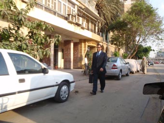 And yet as we crossed
the bridge onto Zamalek Island, the
scenery changed – the island, set on the Eastern side of the
Nile, is a more up-market area – indeed, it is considered
one of the top residential areas of Egypt – borne out by the
number of Embassies to be found there.
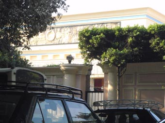 The streets are a
little wider - some edged with stubby trees hanging on in
the slightly cleaner air – but are narrowed back by the
solid lines of cars parked in every possible place. Many
of the buildings are difficult to see, hidden by tall walls,
broken by gated entrances often guarded by gun-toting
soldiers.
Our hotel, the Horus
House Hotel, turned out to be a little gem. Like many
hotels in Egypt it does not take up a whole building, but
merely a couple of floors. But it then seems to be
interwoven with several buildings around it – we were
constantly getting lost going up and down stairs and along
twisting corridors to get to our room and back, but the room
was clean and the quick breakfast we had when we arrived was
great value.
Cairo – Day 1
–Bazaar, Headscarves and a show
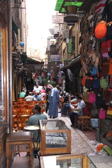
Suitably full and having had a quick wash, we
took our lives in our hands in the rickety lift to the
street and hailed a cab to take us to the
Khan el-Khalili souk. This, one of the largest souks,
or bazaars, in
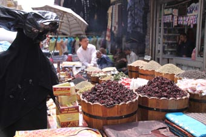 Egypt,
dates back to the mid 12th
century when it was a caravanserai, a sort of Motorway
Service Station, for merchant convoys – and like Trust House
Forte, they tagged a few shops on.
Today, it covers some 20 acres, a rabbit warren of shops and
stalls, some aimed at tourists with all the associated trash
and others, the cloth, meat, spices, vegetables and street
food vendors, being where the locals come to shop.
And interspersed throughout are the coffee shops, mostly
small, intimate – and all offering the ubiquitous shisha
waterpipes.
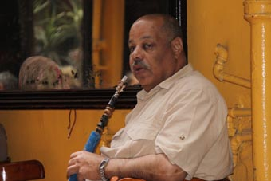 Their smell, along with that of the coffee and
spices, makes a head mix as you wander around. Indeed, for
many years, this area controlled the flow of spices into
Europe.
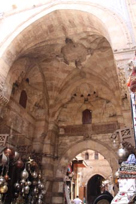
We spent a couple of hours just walking – sometimes we found
ourselves in the tourist bits, the outer ring, or, when
following an interesting looking alley way, right in the
middle of the “locals bit”. After a while, Peter’s knee
started to twinge a bit so we found a nice coffee shop where
Jean left Peter people watching as she dived off with her
camera, discovering many old buildings
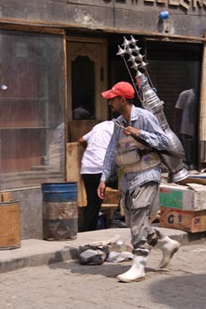 and much of the old
walls of Cairo that have now been absorbed into the market
and seeing the life of the market like the tea sellers who
wander the streets
By this time, hunger pangs were starting to kick in again so
we grabbed another taxi and went in hunt for the Windsor
Hotel, once one of the old colonial hotels, and where we’d
heard the food was superb.
The food may be, but first we had to find it – we knew
roughly where to go, and that was a lot better than our taxi
driver. After a fairly extended tour of the area, including
asking several policemen (who were trying to direct traffic
in the middle of intersections when our driver pulled up
next to them), we bailed out and tracked it down on foot.
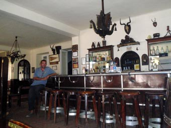
It turned out we’d actually driven past it a couple of
times, but hadn’t recognised it with the boarded up shops on
the ground floor. It was more faded elegance inside, but
the bar on the first floor was spacious and welcoming, and
full of mementoes from its many years as a British Army
officer club.
The beer was cold, the food excellent – and for a bit when
we considered staying another night in Cairo, we thought
we’d try a night there.
But time was rocking on. The next couple of hours were
spent wandering the streets trying to track down an
English-Turkish phrase book – without much luck – heaps of
Arabic-Turkish ones mind.
Then back to the Hotel where we spent an hour enjoying a
couple of coffees in the first floor café next door, and
people watching. Across the road is an Art College and the
students were all finishing for the day. The boys all
pretty much looked like bloke students, albeit a little
tidier than you see I the west.
But the girls were fascinating. Remembering that Egypt is a
Muslim country, they ranged from full burqa covers to
uncovered heads and what any western girl might wear.
Most, though, fell between these extremes, wearing western
clothes that covered and head scarves. And their head
scarves were their statement of individuality – often with
more than one, carefully folded and pinned to blend the
colours and textures. It was a good feeling to see
these young adults who managed to blend a respect for their
religion with a respect for themselves as people – and
seemed to bode well for the future.
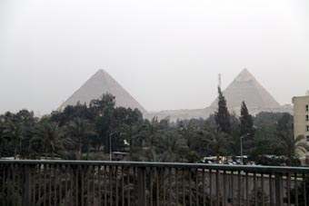
Back in the hotel, after a quick shower and a drink in the
bar with a couple of other yachties staying there, we met
our tour guides, Heba and Ranouf of GAT Travel Agency – the
people who John, our guide back down on the Nile, had
recommended.
In the air-conditioned minibus, we chatted about this and
that, as you do, until Jean finally spotted the Pyramids
rising out of the suburbs ahead of us. As we got closer,
she quietened and the camera came out again until we pulled
up just outside the Gaza complex.
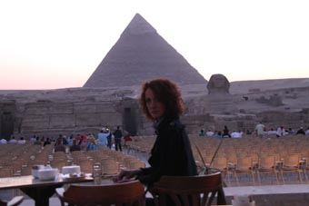
The guides passed us our tickets and we entered the seating
area, just to the left of the front of the Sphinx. There
was enough light left for Jean to be struck speechless by
the view – to our right, the
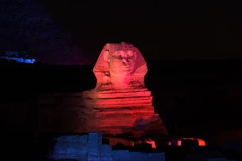 Sphinx and up on the brow of
the hill, the three great Pyramids. But we were here for
the Son & Lumiere – or Sound & Light show.
I
think the Cairo Son &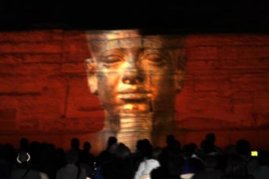 Lumiere was the first, certainly in
Egypt if not the world, but the concept’s pretty simple.
Take an ancient monument or two, in this case the Valley
Temple of Khafre and the Sphinx, and use these as the screen
upon which to shine your light show. Tag in a commentary
(and I’m sure it was Robert Burton here), then sell tickets.
But it is so so well done. Peter had seen it 20 years
before and then it mainly used one of the lower temples and
the face of the Sphinx, but now we have lasers and all three
of t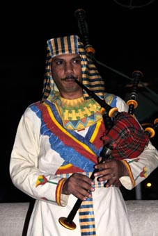 he
Pyramids are used. The Sphinx plays a major role as
both hero and sometimes commentator and somehow, being at
night, everything feels bigger and more impressive – the
light show is somehow able to let you see how these massive
monuments once looked in all their prime – especially when
the lasers show you the decoration that used to adorn the
Pyramids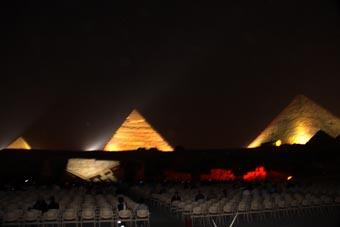 themselves.
Plus, you get live music. In our case, a bagpipe and drum
band, dressed in Egyptian clothing, which was a little
unexpected. But with a subsequent Google on “bagpipes
Egypt”, we found that bagpipes were used in Ancient Egypt
(and that they were the instrument of choice with the Roman
Infantry Legions (the cavalry used trumpets)). (Remember
this and you may never need to “Call a Friend”)
Cairo – Day 2 – Pyramids, Solar Boats and THE MUSEUM
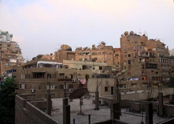
The day before had been full on and unsurprisingly, we’d got
to bed pretty soon after getting back from the Sound & Light
show and woke early to gaze across the view from our room.
We've never seen so many Satellite Dishes - and as ever,
each building is a forest of rebar since then it's
technically "not finished" and the owners don't have to pay
the Completion Tax.
After a quick breakfast and a check with the Hotel’s
internet on what the forecast for the Eastern Med was over
the next 10 days, Heda arrived to take us to see the
Pyramids etc etc in the day light.
Heda was intense, proud to be an Egyptian and proud to be a
Muslim woman. Even after all the time we have been
traveling in Islamic countries, we’d had little chance to
chat with the professional women and Peter found it
fascinating to listen as Jean and Heda talked about their
lives. And, like John, Heda was everything you could ever
want in a Guide – she had a deep knowledge about what she showed
us, .and she used this knowledge, applied this knowledge, to
help us understand the history of her country, and what it was,
and it is like, to be an Egyptian.
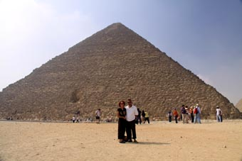
We have been phenomenally lucky to meet John and Heda.
We drove in our minibus up the same roads that Peter had 20
years ago, but then he was in one of the locals’ busses, not
in his own minibus. And that wasn’t the only difference –
20 years back, the area around the Pyramids was a free for
all – with tourists the target for every scam imaginable.
Today, the control is much tighter, the facilities are first
class – and yet it is still so Egyptian.
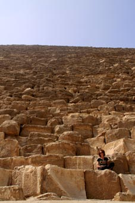
If you want to know the facts and figures about the
Pyramids, Google it. We did afterwards, but that day, we
parked up and first walked over to the Pyramid of Khufu (or
Cheops), the biggest of the pyramids.
The Pyramids are the opposite of Stonehenge, which always
seems so vast when you see photographs of it, yet in the
flesh, is surprisingly small. No photograph can ever convey
the sheer breath-taking size of Khufu’s monument. It soars
up to the shy, each block of stone so vast you’d have
trouble working out how to move it today – and it is
estimated there are 2.3 million blocks weighing a total of
5.9 million tons.
It is possible to go into the Pyramid, following some of the
original passages into the
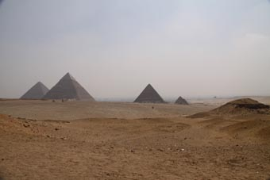 Royal Tomb, but Peter had done it
20 years ago and, knowing Jean’s dislike of small, hot,
humid underground areas, he suggested Jean might not bother
this time. She agreed and instead climbed a little way up
to pose in her “Africa” T-shirt.
The heat by that time was building so it was nice to leap
back in the bus and head up to the crest that overlooks the
site. From here you get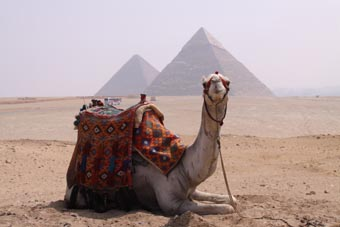 a feeling of the sheer size
of the
complex – it’s not just the three well known pyramids, but
nine other small ones and a mass of other tombs – and how it
must have dominated the ancient city. Today, to the east,
the suburbs come tight up against the site, but to the west,
the desert flows like water in undulating waves and outcrops
of rock to the horizon.
The crest is also full of the Camel Corps – 20 years ago,
they roamed free, hassling tourists, but now seem to be
banished up here.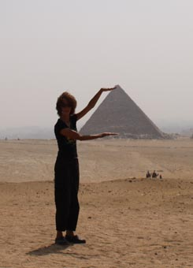
And, of course, we couldn't resist a little
bit of perspective photography.
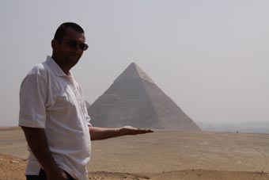
Next, after 5 minutes of air-con heaven in the buses, we
decanted next to the Pyramid of Khafre, which although it’s
smaller than Khufu’s, is built on a spur of rock so seems
higher. It’s also probably the most photographed, retaining
the top of the white limestone smooth casing that used to
cover all the Pyramids until they were used as a quarry for
medieval Cairo.
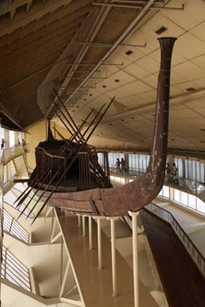
We walked along two of its sides until we reached the museum
of the Solar Boat. And well worth it.
It was discovered in 1954 when someone building a road came
across a few solid slabs of stone. When one was lifted and
they peered inside, they saw a mass of bits of wood (like
about 1200) which when they were laced together turned out
to be a 120 foot 40 ton funeral boat – the experts are still
arguing whether it was ever used or just buried as an
offering.
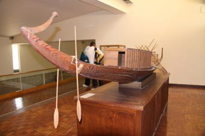 But it has no nails and few pegs; it is literally
stitched together with cord and then becomes waterproof as
the wood and cord swells when wet.
The climate controlled shed it is in lets you walk all
around it, over it, under it but, ironically, its sheer size
means that a model nearby gives you a better idea of what it
looked like.
They believe that there may be another dozen of these boats
buried around the site just waiting to be found.
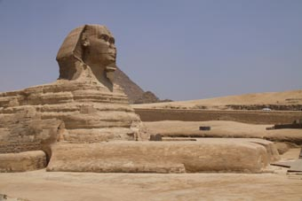 With our apologies to Menkaure, the Pharaoh of the third and
smallest Pyramid, we skipped him (as an aside, the Brit’s
robbed his tomb to send his sarcophagus to England in the
1800’s – the ship sank in the Med) and headed down the hill
to the Sphinx complex.
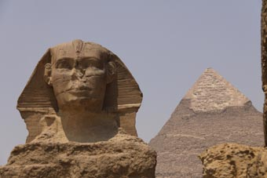
It’s odd to think as you wander past the giant paws that up
to 150 years ago, all that showed of the Sphinx was its head
–
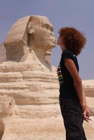 the rest was buried beneath the sands. Now long
excavated, it beggars description – until you realise that
the Sphinx was never built – it was just carved out of
convenient spur of rock.
As you can see, Jean got up close and personal.
We spent just 4 hours at the complex and you know it’s just
far too short a time to even get close to understanding this
place. But even in this short time, we still walked away
with a sense of awe at the achievement of these ancient
people – even today we’d be pushed to build anything coming
even close – but then we ‘d probably never raise the money.
Religion can be a great motivator.
With half the day gone, we headed on for what must be one of
the great museums of the world – The Egyptian Museum. Here
there are over 120,000 artifacts covering predominately the
history of the ancient aside of Egypt.
From the outside it’s a large pink Neo-classical style
building, fronted with some pretty gardens. These gardens
give you an idea of what waits inside since they are dotted
with 2-3,000 year old statues. Sadly, they don't allow
photography inside the Museum.
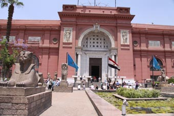
Once through the heavy security at the entrance, you are
faced with a cornucopia of treasures, ranging from statues
higher than a double decker bus, solid slabs of carved stone
as big as the side of a bungalow and stone coffins big
enough to carry a small car. But then there are the every
day items, the needles used to make the delicate shoes and
clothing, the cups and bowls used every day – and in between
every item you could imagine.
The rooms are all stone floored, stone walled, lots of
sweeping stairs leading you from room to room – each
displaying their own set of artifacts.
Some are delicate, the gold necklaces with paper thin
leaves, some are sturdy like the wooden cases that enclosed
their sarcophagus, some are beautiful like the fainted
friezes.
Heda lead us around, picking diamonds from the mass,
explaining in detail while allowing our senses to absorb all
the rest around us.
Then there are the two Mummy rooms – each with its
collection of a dozen mummies. Some are famous, most you
have never heard of. But to look at their dried out wizen
faces, it can be hard to realise that once these were living
breathing people who took this route because they wanted to
live for ever. As Jean said “well, we are looking at them, we
know who they are – they’re getting there.”
And finally, we have the Tutankhamen’s display, a couple of
rooms in its own right. Everyone has probably seen a
photograph of his golden funeral mask, and that’s pretty
impressive, but it’s all the other bits that get you. His
two thrones, his shoes, his bows, strings coiled alongside
ready to be re-strung, his clothes.
We went there last – and it was a fine finish to a day that
had stretched us – not just physically, but emotionally.
Here was a civilisation that was the most advanced the world
had ever seen – and now look at Egypt today – a backward
nation – basically because it is so corrupt – yet still
filled with exciting and forward thing people.
Thank you Heda for being so wonderful for us.
Swinging past the hotel, we headed back to the bus station
and enjoyed an empty bus back to Ismailia. Back on the
boat, we considered the last couple of days – what an
experience. But now, we had the rest of the Suez Canal to
face.
More of that next time.
All the best
Peter & Jean
Next Log Page:
Ismailia to Turkey - a
win over baksheesh & the last bit of the Suez Canal
|
|
|